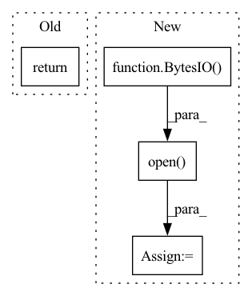

Pattern ID :27424

Before Change
img_LR = img_HR
if not self.need_HR:
img_HR = img_LR
return {"LR": img_LR, "HR": img_HR, "Index": index}
After Change
"sr_{}_{}_{}".format(
self.l_res, self.r_res, str(index).zfill(5)).encode("utf-8")
)
img_SR = Image.open(BytesIO(sr_img_bytes))
img_SR = self.transform(img_SR)
if self.need_LR:
return {"LR": img_LR, "HR": img_HR, "SR": img_SR, "Index": index}
else:
In pattern: SUPERPATTERN
Frequency: 3
Non-data size: 4
Instances
Fragment ID: 81567677
Project Name: janspiry/image-super-resolution-via-iterative-refinement
Commit Name: 8cdec2d2a716f6a62b307fa0834d89403ebd31ba
Time: 2021-08-02
Author: lw_jiang@foxmail.com
File Name: data/LRHR_dataset.py
M Class Name: LRHRDataset
N Class Name: LRHRDataset
M Method Name: __getitem__(2)
N Method Name: __getitem__(2)
M Parent Class: Dataset
N Parent Class: Dataset
M File Name: data/LRHR_dataset.py
N File Name: data/LRHR_dataset.py
M Start Line: 41
M End Line: 62
N Start Line: 40
N End Line: 67
'>
Before Change
img_LR = img_HR
if not self.need_HR:
img_HR = img_LR
return {"LR": img_LR, "HR": img_HR, "Index": index}
After Change
"sr_{}_{}_{}".format(
self.l_res, self.r_res, str(index).zfill(5)).encode("utf-8")
)
img_SR = Image.open(BytesIO(sr_img_bytes))
img_SR = self.transform(img_SR)
if self.need_LR:
return {"LR": img_LR, "HR": img_HR, "SR": img_SR, "Index": index}
else:
'>
Fragment ID: 81567679
Project Name: janspiry/image-super-resolution-via-iterative-refinement
Commit Name: ab7fd724c37c270e9bad32892034fed18790eb59
Time: 2021-08-02
Author: jiangliangwei@tetras.com
File Name: data/LRHR_dataset.py
M Class Name: LRHRDataset
N Class Name: LRHRDataset
M Method Name: __getitem__(2)
N Method Name: __getitem__(2)
M Parent Class: Dataset
N Parent Class: Dataset
M File Name: data/LRHR_dataset.py
N File Name: data/LRHR_dataset.py
M Start Line: 41
M End Line: 62
N Start Line: 40
N End Line: 67
'>
Before Change
def imread_pillow(im_path: str) -> TImage:
return Image.open(im_path)
__all__ = ["TImReader", "tensor_to_numpy_image", "imread_cv2", "imread_pillow"]
After Change
if isinstance(im_src, (Path, str)):
image = Image.open(im_src)
elif isinstance(im_src, bytes):
image = Image.open(BytesIO(im_src))
else:
raise TypeError("Unsupported type")
return image.convert("RGB")
'>
Fragment ID: 81567681
Project Name: oml-team/open-metric-learning
Commit Name: e939fb26411ed6c14044930dd11d701f6f30eb7c
Time: 2022-08-09
Author: aleksei.v.tarasov@gmail.com
File Name: oml/utils/images/images.py
M Class Name: AnonimousClass
N Class Name: AnonimousClass
M Method Name: imread_pillow(1)
N Method Name: imread_pillow(1)
M Parent Class:
N Parent Class:
M File Name: oml/utils/images/images.py
N File Name: oml/utils/images/images.py
M Start Line: 33
M End Line: 34
N Start Line: 39
N End Line: 46